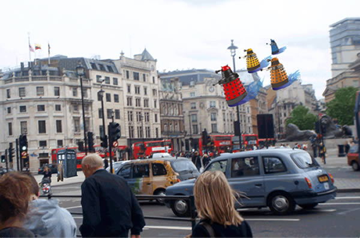
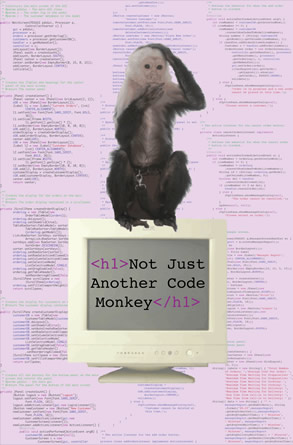

Print Projects
Posters
Daleks in London
Daleks in London was done for the vector imaging class I took winter quarter my sophomore year. I used my own photo of a random street in London and integrated the Doctor, the TARDIS, and four flying Daleks. I am a huge Doctor Who fan so I really loved getting to do this project. I also love incorporating my own photography in projects. I use my photos for backgrounds on all my devices and whenever I need an image of something if I have something that fits the situation.
Not Just Another Code Monkey
This poster was also a vector imaging class project, but really it is an expression of myself. I had to do a project that utilized type in two different ways, so I used code. I would have to say that this poster is the best reuse of code I've ever seen. The background is a bunch of my GUI code from the Pizza Delivery System. Beyond that, I never want to be a code monkey. In fact, I don't consider myself a programmer - yes, I can code, but I don't like it that much. Sometimes it is tons of fun, but if it's back-end stuff, I'm not a fan. For example, I love working on this site, but I would hate building a game engine.
London Travel Poster

This poster was done for Basic Design I, a class I took winter quarter my sophomore year. This was my favorite project of the class, and my first successful Photoshop project. I chose London because it is my favority city of all those I have visited. Once again I used my own photography. The only image that isn't original is the phone booth in the top left corner. I really enjoyed playing with the composition and finding photos that fit the structure imposed by the photo of the Eye. I added filters to some images to give the entire poster the overcast look - mirroring cloudy London town. I chose a blackletter typeface because it reflects the rich history of England. All in all, it was a lot of fun - a redeeming project for the course.
T-Shirt Designs
WYSE/ICTM Team Shirt 2009
This was my first real design project. For a junior in high school with no design experience, it could certianly have been a complete disaster. As it was, it was an improvement over the previous year's design which was the goal. Looking back now after taking a few design courses, I would change the main font to something less abnoxious - but of course no one cared as I was the most artistically inclined person on the team.
In explanation: WYSE is Worldwide Youth in Science and Engineering, an international program, headquartered at the University of Illinois, offering the annual Academic Challenge competition, a summer camp and other programs. ICTM stands for Illinois Council of Teachers of Mathematics, which host an annual state-wide math competition. My high school sent a team to both competitions every year. I first went as a freshman and fell into a sort of "team leader" position junior year, when I told the coach I'd take care of the t-shirt, because his design was so lame the year before.
WYSE/ICTM Team Shirt 2010
Creating this shirt was a lot of fun. I learned a little between doing this shirt and the first WYSE shirt. Still before any design courses and learning how to use Illustrator. The design was done in Microsoft Word, so I was rather limited in my options.
The design itself is based on the openning sequence from the show Numb3rs. My calculus class and most of the team were huge fans of the show. It was the go to lesson plan when a teacher was sick after all. Who doesn't love any show that teachers will play so they don't have to teach? ;P
Golf Team Shirt 2009
This shirt was designed in conjunction with the team captain and my best friend, Abby Frideres. We met at my house and played with ideas while struggling with Adobe Photoshop Elements until we got something we liked. We knew we wanted it to be girly without being overboard.
Abby really wanted an argyle design, so we settled on the front having an argyle-esque design with golf clubs forming the X on the middle square. For the back, we knew we wanted a golf ball, the year, and all our teammates names. I liked the idea of having our names circling the golf ball. We also added the quote because it was one of our team sayings that year.
This is one example of when I really think the design turned out well, despite our lack of experience and training. Even now, I think we did a great job - even with font choices (something I'm usually extremely critical of these days). Edwardian script is very feminine and the sans-serif font is geometric so it plays nice with the golf ball acting as a zero. The only change I'd make now is to clean up the argyle to look more professional, less like it looks like it is a bunch of rectangles shoved together in MS Paint.
Game Club Shirt 2009
Mr. Boudro asked me to design a new shirt for the Alleman High School Game Club during my senior year. He liked the shirts I did for the WYSE/ICTM and Golf teams, and he was looking for a shirt that fully reflected the club. My only requirements were to make it for [Board]Game Club, not Chess Club (the name changed between shirt designs) and to not include the year so it could be used again in the future. We also had to include the school logo somewhere in order for it to be considered an official school t-shirt, approved by the administration.
My friend, Matt MacLennan, and I chugged away at this design for a few weeks. I did the entire front design myself. The back was his idea and he came up with most of the storylines because he was more familiar with the games we played. I then took the content and styled it. I had some fun with typefaces to make it more interesting. I tried to choose fun typefaces that reflected the plot of the game. The front colors were chosen based on card colors. The back switched red for Kelly Green because of the school logo. We were limited to 3 colors a side to keep the cost reasonable.
Promotional Material
SSE Brochure
In August 2012, I created a new brochure for the Society of Software Engineers (SSE) @ RIT. The previous one was five+ years old and was sorely outdated in both information and design, so I took it upon myself as the Head of Public Relations to see to it that we had an updated, modern brochure to promote our organization. I had a lot of fun working on it. I learned a lot, as it was the first brochure I'd done in about 8 years and the first serious one I'd ever done (i.e. not for a grade school project).
While it isn't quite finished yet - it's going through an approval process and has a few pending changes - here is a pdf copy of the current state. Please note that this is not currently an official SSE distribution.